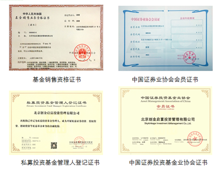

关于我们
北京创金启富投资管理有限公司是国内领先的独立第三方财富管理机构，成立于2012年5月，注册资本金2400万元。2013年1月获得中国证监会颁发的公募基金销售牌照。2014年8月，获得中国证券投资基金业协会颁发的私募投资基金管理人资格。
公司专注于服务高净值人群及机构投资者，坚持“专业、独立、客观”的原则，提供包括理财市场研究、金融产品分析与筛选、客户财务状况分析以及资产配置建议的一站式综合理财服务。
创金启富严格甄选国内精品基金，通过全面的产品筛选及严格的风险控制体系，为高净值客户和机构投资者实现资产的保值增值。截至2014年年末，累计资产管理规模超过40亿元。
旗下服务平台：
理财易站www.5irich.com：网上理财咨询和基金交易平台，为投资者提供专业的理财咨询和自助交易的便捷服务；精选基金产品和组合，分享每日最新行业资讯、权威研究报告、深度数据分析等，满足各类投资人对独立、专业的投资资讯和服务的需求。
理财易站（APP）：掌上无线客户端应用，是创金启富针对移动智能终端研发的一款免费的手机理财软件，让投资者可以随时随地实现一键购买基金组合、短期理财和高端理财产品，掌握最新投资理财资讯。
行业资质：
